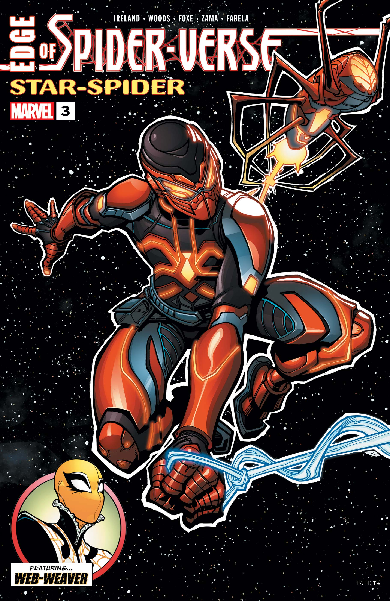

Edge of Spider-Verse (2024) #3
PUBLISHED:
April 10, 2024
WRITER:
Justina Ireland, Steve Foxe
APRESENTANDO O STAR-SPIDER! Sua vizinhança pode ter alguns quarteirões de comprimento ou ter o tamanho de uma estação espacial inteira.
STAR-SPIDER voa pelas estrelas em sua nave Silk ajudando os necessitados, navegando por paisagens urbanas alienígenas. Não perca o novo
herói-aranha mais legal que vai enfeitar a página de quadrinhos! Também nesta edição, WEB-WEAVER RETORNA! Um dos novos personagens
mais legais do Aranhaverso está de volta! Arrasar, anotar nomes e ficar bem ao fazer isso!